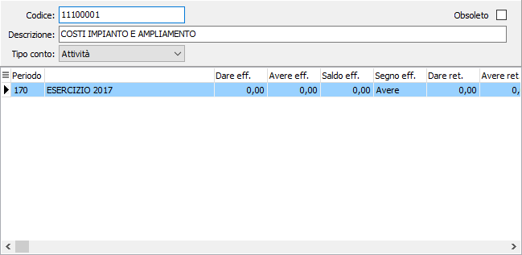

Manutenzione sottoconti
Il piano dei conti aziendali può essere utilizzato, se non è stato configurato l'utilizzo del piano dei conti di OS1 in Configurazione analisi di bilancio. I dati possono essere generati in automatico dalla procedura di manutenzione valori qualora si effettui l'importazione da file esterno.

CODICE: codice alfanumerico di 10 caratteri, a libera scelta dell’utente. Sul campo sono attive le funzioni di ricerca (F9) sulla tabella stessa.
DESCRIZIONE: campo alfanumerico di 50 caratteri per la descrizione del conto inserito.
TIPO CONTO: combo box per identificare la tipologia del conto. Valori possibili:
attività;
passività;
costi;
ricavi;
conti d'ordine attivi;
conti d’ordine passivi;
conti di servizio.
OBSOLETO: flag attivabile dall’utente per inibire il possibile utilizzo dell’elemento di tabella in esame nelle successive transazioni. Spuntando la casella sarà automaticamente assegnata alla data obsolescenza la data di sistema.